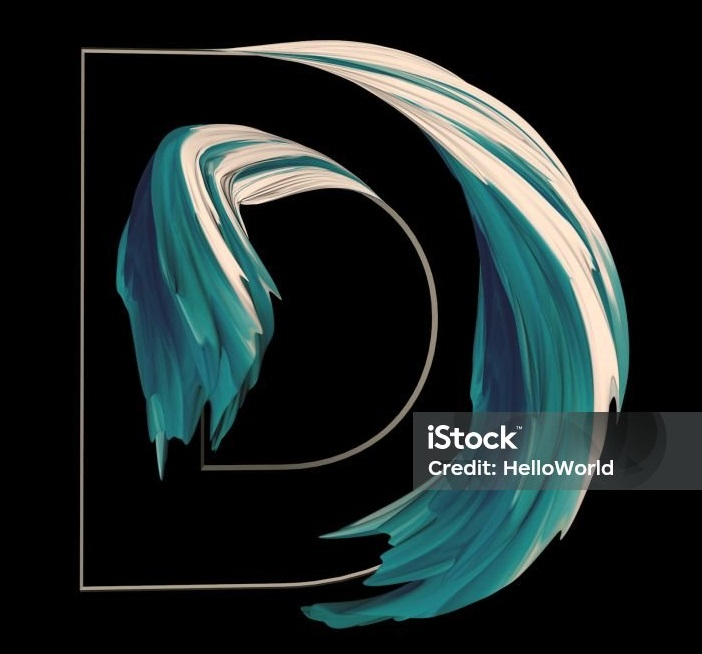
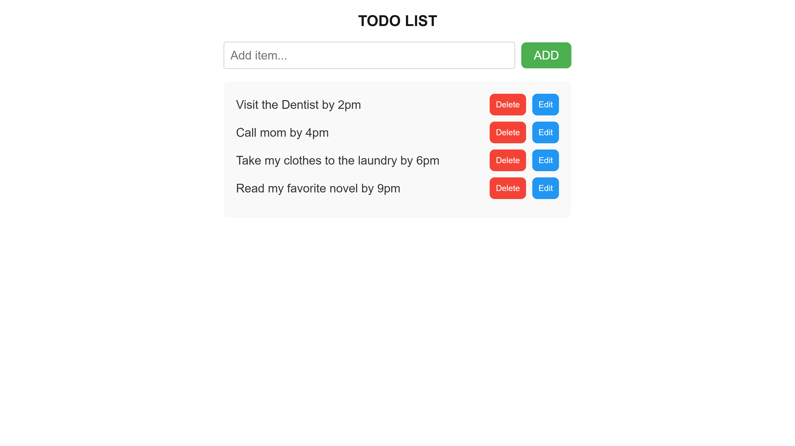

Hello
I'm DANIEL EFE, a Technical Writer focused on developer documentation and Frontend systems with over 3 Years of experience in the tech industry. I specialize in creating clear and concise technical contents covering Frontend Development, CI/CD, observability, and API documentation.
I've written for developer tools companies including Flagsmith, CircleCI, LambdaTest, and OpenReplay, creating tutorials and articles that help developers understand and adopt modern technologies.
In addition to my Writing Expertise, i'm continuously honing my skills as a frontend developer, working with technologies like React, Next.js, and Tailwind CSS.
When i'm not coding or writing, you'll find me learning about new technologies, engaging with the developer community and putting recent learnings to writing.
Feel free to explore my Work and reach out if you'd like to collaborate or learn more about what i do!

#Documentations
Over the years, i've built documentation projects focused on helping Developers understand and work with APIs and Open-Source Tools effectively. Each project prioritizes clarity, structure, and a smooth Developer Experience.
Fake Store API Documentation Website.
A Docusaurus-based API documentation website for the Fake Store API, providing clear endpoint references, request/response examples, and practical guides to help developers understand and integrate the API effectively.
Skills: Docusaurus, Markdown, REST APIs, React, Git/GitHub and Technical writing.
Good First Issue Documentation Website.
A Docusaurus-based documentation website that provides comprehensive guides and resources to help beginners navigate and contribute to open-source projects effectively.
Skills: Docusaurus, Markdown, React, Git/GitHub and Technical writing.
#Publications
Over the years, i've contributed to various platforms as a Technical Writer, focusing on topics related to Frontend Development, CI/CD, DevOps and modern web technologies. My articles aim to simplify complex concepts, making them accessible to Developers at all Levels.
Hashnode - Build and Deploy Next.js Application with Azure DevOps.
In modern web development, automating the build and deployment process is crucial for efficiency and reliability. This article walks through setting up a CI/CD pipeline using Azure DevOps to build and deploy a Next.js application, streamlining the workflow from code commit to production deployment.
Flagsmith - Integrating Datadog Workflows with Flagsmith for Automated Reliability.
Manually rolling back broken features can lead to downtime and poor user experience. This article explores how to combine Flagsmith feature flags with Datadog Workflows to automatically detect issues in production and respond by disabling or adjusting features, helping teams build self-healing and more reliable applications.
Flagsmith - Monitoring Feature Flag Performance with Flagsmith, Prometheus, and Grafana.
Shipping new features safely requires more than just feature flags—it also requires visibility. This article shows how to integrate Flagsmith with Prometheus and Grafana to monitor feature flag performance in real time, visualize key metrics, and use Feature Health to understand whether a feature is behaving as expected in production.

CircleCI - Automating React application deployment to AWS Elastic Beanstalk with CircleCI.
In teams and enterprise projects, hosting on AWS gives you more flexibility than platforms like Vercel. This article shows how to deploy React apps to AWS Elastic Beanstalk and automate the process using CircleCI, turning manual deployment into a reliable CI/CD pipeline.

CircleCI - Automating UI testing and documentation with Storybook, Chromatic, and CircleCI.
In modern front-end development, ensuring UI consistency and test reliability is crucial as applications grow. This article walks through setting up Storybook in a React project, automating visual and interaction testing, and documenting components. You’ll also learn how to streamline your workflow by integrating Storybook with CircleCI and Chromatic.

CircleCI - Automating CSS code quality in front-end projects with Stylelint and CircleCI
Maintaining clean and consistent CSS is vital for scalable front-end projects. This article explores how to use Stylelint to enforce CSS code quality and catch stylistic or syntax issues early. It also covers how to integrate Stylelint into a CircleCI pipeline to automate style checks during development.
Open Replay - Unlocking The Power Of CSS Subgrid For Efficient Layout Design
In web development, achieving pixel-perfect layouts has constantly been a hard nut for developers to crack. This article will show you how to use CSS subgrids to simplify all your layout development work.
Hashnode - Exploring Reacts Component Lifecycle: From Mounting To Unmounting In Details.
In React development, understanding the component lifecycle is crucial to building efficient applications. This article dives deep into React's component lifecyle methods, ensuring you have full control over your Components
.gif)
Hashnode - Implementing A Dark Mode Feature Using Css And Simplified Javascript Codes
Dark mode is more than just a trend—it's a practical feature for reducing eye strain and enhancing user experience. This article will discuss the process of creating a fully functional dark mode toggle using CSS and JavaScript.
Hashnode - Creating Highly Maintainable React Applications With Composable Components
Building scalable React applications requires writing maintainable code. This article explores how to create highly maintainable React applications by leveraging composable components, helping you design cleaner, reusable, and more efficient code structures.
Hashnode - Exploring The Power Of Trigonometry In CSS: From Precise Measurement To Dynamic Design
Trigonometry isn't just a math class-it's a powerful tool for creating dynamic, eye-catching web designs. This article explores how you can harness the power of trigonometry in CSS to achieve precise layouts and add motion to your designs.
#Projects
I’ve worked on a range of projects focusing on Frontend Development. Beyond building responsive and accessible user interfaces, I incorporate industry-standard practices like CI/CD, automated testing with tools like Jest, React Testing Library, and Cypress, as well as component-driven development using Storybook and Chromatic. Each project reflects my commitment to writing maintainable code, ensuring performance, and delivering a smooth developer experience.
A Landing Page
A responsive landing page built to introduce Rapxtar’s brand and offerings with a modern, clean layout optimized for mobile and desktop.
Skills: Next.js, Tailwind CSS, React, and Vercel
A Laundry Website.
A web application for a laundry service that allows users to schedule pickups and deliveries through a form that generates estimated turnaround times.
Skills: React, Tailwind CSS, React Hook Form, and Vite.
A Modern Weather Application.
A weather application that displays real-time data based on user location, with fallback defaults and location-based search functionality.
Skills: HTML, CSS, JavaScript, and OpenWeather API.

A Todo List Application.
A simple todo list application that allows users to add, edit, and delete tasks in a clean, minimal interface.
Skills: Next.js and CSS.
#Skills
Markup
HTML
XML
Stylesheet
CSS
Tailwind
Styled Components
Languages
JavaScript
Framework
React
Next.js
Version Control
Git
GitHub
Testing
Jest
React Testing Library
Storybook (with play function)
Chromatic
Percy
UI & Dev Tools
Storybook
Figma
Chrome DevTools
CI/CD
CircleCI
GitHub actions
#Awards
My work in technical writing and documentation has received recognition from organizations that value clarity, accuracy, and developer-focused content.
#Contact
I'm always open to exciting New Opportunities and Collaborations. Whether you have a project in mind, want to discuss Technical Writing, or simply want to connect, feel free to reach out.